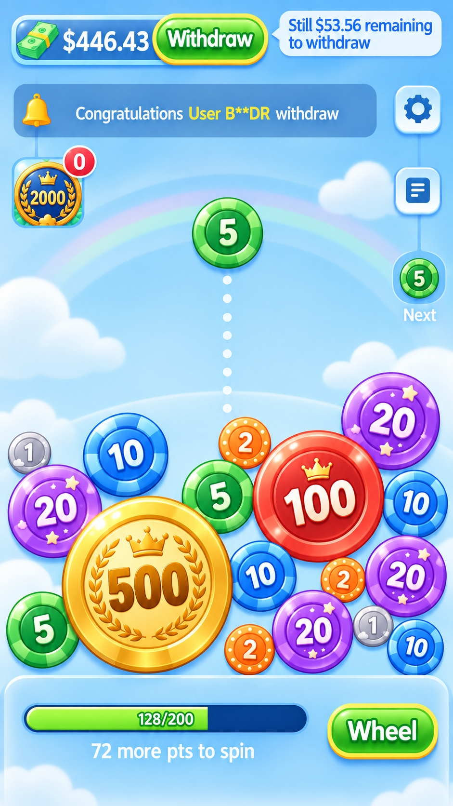
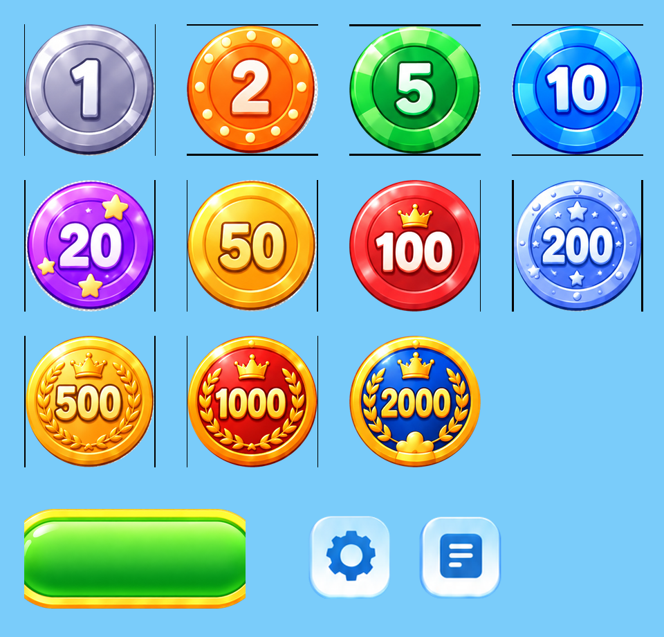

主界面 R1
目标：蓝天彩虹、玻璃面板、金边绿按钮、用户指定的 11 级筹码。独立副本：Restoration/11_UnityReskin。
用户指定目标图

已准备素材 · 真实透明底切图

11 级筹码来源 RGB 逐字节一致。
按钮为空白底图，文字和数值保持原生动态组件。
玩法碰撞、合成、存档和商业化分支保留。
待确认：按图调整主界面布局与添加白色落点圆点。
待验证：Unity 导入、真实画面、按钮点击和地区文字。